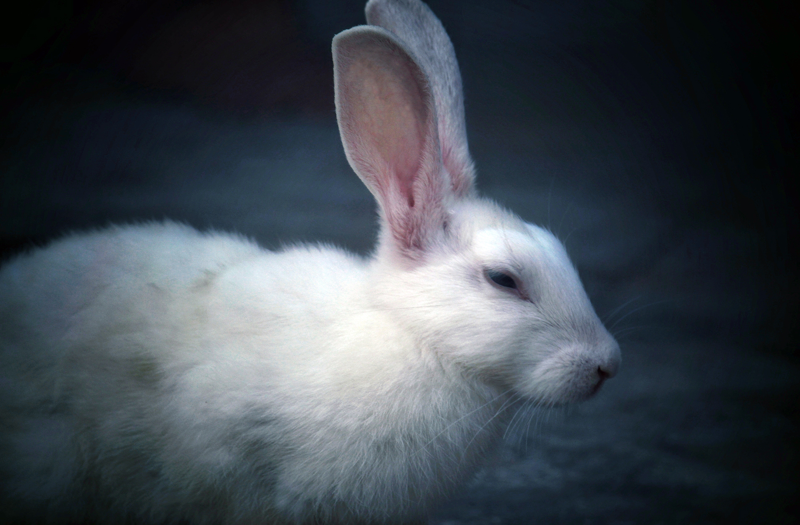

<div class="container">
    <h6 class="display-4 text-secondary">Songs from Alice in Wonderland and Through the Looking-Glass</h6>
    <a href="https://archive.org/stream/songsfromalicein00broa/songsfromalicein00broa#page/n33/mode/1up"
        class="btn btn-info my-5">Get the original</a>

    <div class="imgDiv">
        
        <!-- d-block mx-auto rounded visible">-->
    </div>
    <footer class="bg-dark py-5 text-muted text-center">
        <div class="container">
            <div class="btn-group btn-group-lg my-3" role="group" aria-label="footer">
                <button type="button" class="btn btn-secondary">
                    <i class="fa fa-github-alt" aria-hidden="true"></i>
                </button>
                <button type="button" class="btn btn-secondary">
                    <i class="fa fa-google-plus" aria-hidden="true"></i>
                </button>
                <button type="button" class="btn btn-secondary">
                    <i class="fa fa-twitter" aria-hidden="true"></i>
                </button>
                <button type="button" class="btn btn-secondary">
                    <i class="fa fa-snapchat-ghost" aria-hidden="true"></i>
                </button>
            </div>
            <p>&copy; Lewis Carrol</p>
            <p>We're all mad here. <small>Chestire Cat</small></p>
            <p>
            </p>
        </div>

    </footer>
</div>